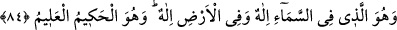

Cenâb-ı Hak insanlardan bir kısmını da kurbet ve mârifet için yaratmıştır. Onları
muhabbet, sıdk, tevekkül, yakîn, müşâhede, mükâşefe ve murâkabelerle mârifet ve
yakınlığa hazırlar. Dolayısıyla böyle kullar, bütün varlığını bu uğurda harcayıp şehevâtı
terk ederek çeşitli mücâhedelerle ve telif sahibi Allah dostlarının tasarruflarına teslim
olarak bu mârifet ve yakınlığa hazırlanırlar.
Behlûl (k.s.) bir hâlini şöyle anlatıyor: Bir ara Basra caddelerinden birindeydim.
Çocuklar çelik çomak vs. oyunlar oynuyorlardı. Bir çocuk onlara bakıp ağlıyordu. Ben
kendi kendime, gâliba bu çocuk oyuncağı olmadığı için üzülüp ağlıyor diye düşündüm
ve çocuğa, “Yavrucuğum niye ağlıyorsun? Sana, çocukların oynadıkları çelik çomak
türü oyuncaklardan alayım” diyecek oldum. Çocuk başını kaldırıp, “ey akılsız adam, biz
oyun için yaratılmadık” diye karşılık verdi. Ben “peki yavrucuğum, öyleyse niçin
yaratıldık?” diye sordum. Çocuk “ilim ve ibâdet için” dedi. Ben “hey mübârek çocuk,
sen bunları nereden biliyorsun?” dedim. Çocuk, “Allah Teâlâ’nın «Bizim sizi boş yere
bir oyun ve eğlence olarak yarattığımızı ve sizin bize döndürülüp
getirilmeyeceğinizi mi sandınız?» (el-Müminûn, 23/115) âyetindeki beyânından” dedi.
Anlatıldığına göre İbrâhim b. Ethem (k.s.) hazretleri Belh hükümdârı âilesindendi.
Bu zâtın ehlini, âilesini, mevki ve makâmını terk ederek sûfîlik yoluna giriş hikâyesi
şöyledir:
Hazret bir gün avlanmaya çıkar. Birden karşısına bir tilki yahut tavşan çıkar. İbrâhim
avını kovalayıp dururken gâibten “sen bunun için mi yaratıldın yahut bununla mı
emrolundun” diye bir ses işitir. Sonra eğerinin yan tarafından “Allah’a yemin olsun ki
sen bunun için yaratılmadın ve sen bununla memur değilsin” diye bir ses daha işitir.
Atından iner, yolda babasının sürülerini otlatan bir çobana rastlar. Çobanın yün abasını
alıp giyer. Atını, av malzemelerini, kaftan vs. ne varsa bunları da çobana verir, yollara
düşer, sonra da olan olur. Allah’ın has ve hâlis kulları kervanına katılıp İbrahim b.
Ethem hazretleri nâmını alır.
İyi bil ki, Allah’tan başkasıyla meşgul olmak oyun ve eğlence kabilindendir. Çünkü
bunda sağlam bir hedef olmaz. En büyük hedef ve gâye Allah’tır. Bunun için selef-i
sâlihîn (r.a.) bütün bunlardan sıyrılıp hepsinin mebde’ ve merkezi olan Allah’a vâsıl
oldular.
Ey gönül Hakk’a yakın olmak istiyorsan hevâyı terk et,
Çünkü içine hava dolan su tanesi denizden uzaklaşır.
Allah Teâlâ bizleri ve sizleri kendi zâtıyla meşgul olanlardan eylesin!
84. Gökteki İlâh da, yerdeki İlâh da O’dur. O, hakîmdir, her şeyi bilendir.